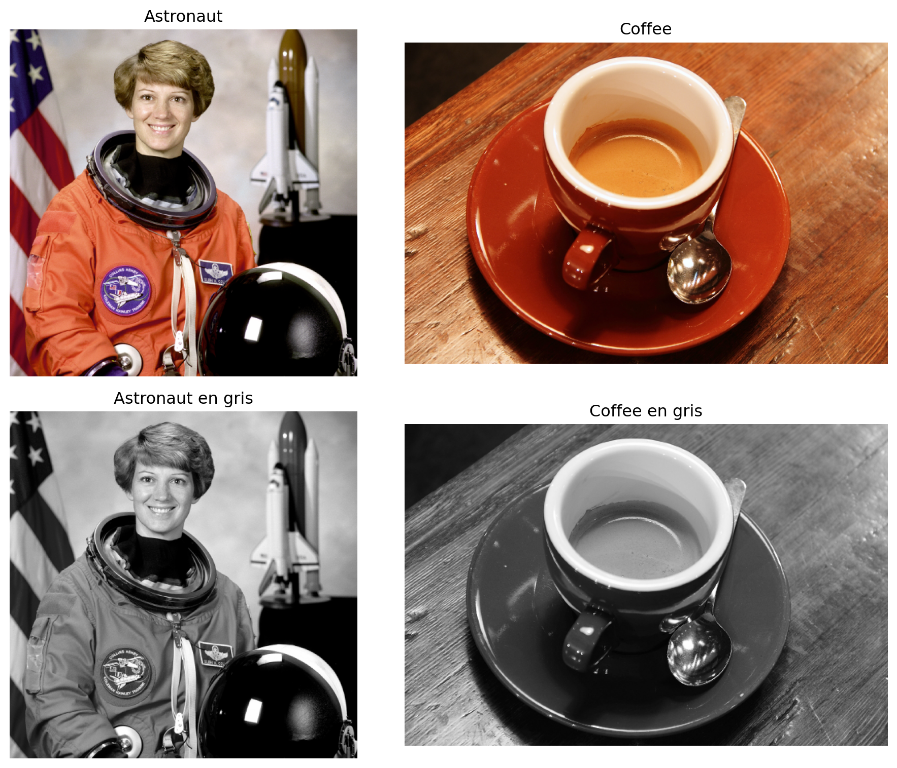
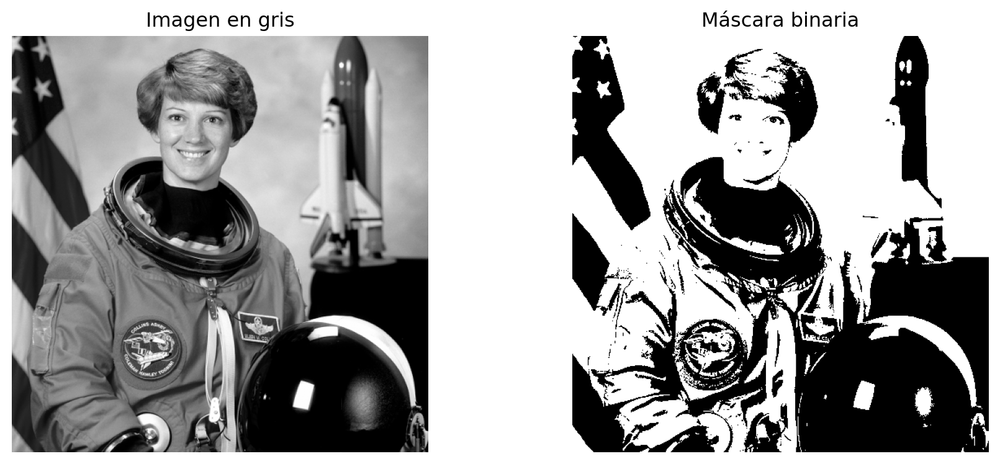

import numpy as np
import cv2
import matplotlib.pyplot as plt
from skimage import data, color, img_as_ubyte
from skimage.feature import graycomatrix, graycoprops
from scipy.stats import skewClase 1. Descriptores de imagen clásicos: GLCM, Momentos de Hu y Momentos de Color
Propósito de la clase
Esta clase introduce tres familias de descriptores clásicos de imagen que siguen siendo útiles para tareas de clasificación, recuperación y análisis exploratorio:
- GLCM (Gray-Level Co-occurrence Matrix) para describir textura.
- Momentos invariantes de Hu para describir forma.
- Momentos de color para resumir la distribución cromática.
La idea central es que una imagen puede describirse mediante un vector numérico de características. En esta primera clase se estudia qué mide cada descriptor, cómo se calcula y cómo implementarlo en Python.
Objetivos de aprendizaje
Al finalizar la sesión, el estudiante será capaz de:
- explicar la diferencia entre descriptores de textura, forma y color;
- calcular matrices de co-ocurrencia y propiedades derivadas de GLCM;
- obtener momentos de Hu a partir de una máscara o contorno;
- calcular momentos de color por canal;
- construir vectores de características básicos para una imagen;
- reconocer fortalezas y limitaciones de estos descriptores en clasificación de imágenes.
Origen y fundamento de los descriptores
GLCM
La idea de describir textura mediante dependencias espaciales entre niveles de gris se formalizó en el trabajo clásico de Haralick, Shanmugam y Dinstein (1973). En ese artículo se plantean características texturales calculadas a partir de la frecuencia con la que pares de intensidades aparecen con un desplazamiento espacial dado. Ese artículo es la referencia histórica central para GLCM.
Momentos invariantes de Hu
Los siete momentos invariantes de Hu provienen del artículo de Ming-Kuei Hu (1962). Su aporte fue construir combinaciones de momentos centralizados y normalizados que son invariantes a traslación, escala y rotación; el séptimo además cambia de signo ante reflexión.
Momentos de color
El uso de los primeros momentos estadísticos del color como descriptor global se consolidó en la literatura de recuperación de imágenes por contenido durante la década de 1990. Una referencia muy citada es Stricker y Orengo (1995), quienes emplean momentos de color como resumen compacto de la distribución cromática. En la práctica, suele usarse por canal el trío:
- media,
- desviación estándar,
- asimetría.
Idea general: una imagen como vector de características
Supongamos que tenemos una imagen y queremos clasificarla. En lugar de alimentar directamente todos sus pixeles a un algoritmo, podemos construir un vector como:
\[ \mathbf{x} = [\text{GLCM}_1, \ldots, \text{GLCM}_p, \text{Hu}_1, \ldots, \text{Hu}_7, \text{Color}_1, \ldots, \text{Color}_q] \]
Cada bloque resume un aspecto diferente:
- GLCM: textura local o regional;
- Hu: geometría global de la forma;
- Color moments: distribución tonal o cromática global.
Preparación del entorno en Python
Imágenes de ejemplo
Usaremos imágenes de ejemplo incluidas en scikit-image para ilustrar los cálculos.
img_color_1 = data.astronaut()
img_color_2 = data.coffee()
img_gray_1 = img_as_ubyte(color.rgb2gray(img_color_1))
img_gray_2 = img_as_ubyte(color.rgb2gray(img_color_2))
fig, ax = plt.subplots(2, 2, figsize=(10, 8))
ax[0, 0].imshow(img_color_1)
ax[0, 0].set_title("Astronaut")
ax[0, 0].axis("off")
ax[0, 1].imshow(img_color_2)
ax[0, 1].set_title("Coffee")
ax[0, 1].axis("off")
ax[1, 0].imshow(img_gray_1, cmap="gray")
ax[1, 0].set_title("Astronaut en gris")
ax[1, 0].axis("off")
ax[1, 1].imshow(img_gray_2, cmap="gray")
ax[1, 1].set_title("Coffee en gris")
ax[1, 1].axis("off")
plt.tight_layout()
plt.show()
1. GLCM: textura basada en co-ocurrencia
Intuición
La GLCM cuenta cuántas veces aparece un par de intensidades \((i, j)\) separado por una distancia y una dirección dadas. Si una textura tiene patrones repetitivos, su matriz de co-ocurrencia tendrá una estructura característica.
Formalmente, para una imagen cuantizada en \(L\) niveles, la entrada \((i,j)\) de la GLCM representa la frecuencia con la que un pixel con valor \(i\) aparece junto a otro con valor \(j\) según un desplazamiento especificado.
Decisiones prácticas importantes
Antes de calcular GLCM conviene decidir:
- número de niveles de gris (
levels); - distancia o distancias;
- ángulo o ángulos;
- si la matriz será simétrica;
- si se normalizará.
Reducir el número de niveles suele ser útil para estabilizar el cálculo y reducir costo computacional.
Ejemplo básico con graycomatrix
# Cuantización simple a 32 niveles
levels = 32
img_q = (img_gray_1 / 256 * levels).astype(np.uint8)
img_q = np.clip(img_q, 0, levels - 1)
glcm = graycomatrix(
img_q,
distances=[1, 3],
angles=[0, np.pi/4, np.pi/2, 3*np.pi/4],
levels=levels,
symmetric=True,
normed=True
)
glcm.shape(32, 32, 2, 4)La salida tiene dimensiones:
\[ (\text{levels}, \text{levels}, \#\text{distancias}, \#\text{ángulos}) \]
Propiedades de Haralick más usadas
scikit-image implementa varias propiedades derivadas de la GLCM. Entre las más utilizadas están:
contrastdissimilarityhomogeneityASMenergycorrelation
props = ["contrast", "dissimilarity", "homogeneity", "ASM", "energy", "correlation"]
features_glcm = {}
for p in props:
values = graycoprops(glcm, p)
features_glcm[p] = values.mean()
features_glcm{'contrast': np.float64(9.26983641788257),
'dissimilarity': np.float64(1.3507421136631752),
'homogeneity': np.float64(0.6705625818198401),
'ASM': np.float64(0.028447296405896605),
'energy': np.float64(0.16849119255130862),
'correlation': np.float64(0.9468835125475412)}Función reusable para extraer GLCM
def extract_glcm_features(
image_gray,
levels=32,
distances=(1, 3, 5),
angles=(0, np.pi/4, np.pi/2, 3*np.pi/4)
):
img_q = (image_gray / 256 * levels).astype(np.uint8)
img_q = np.clip(img_q, 0, levels - 1)
glcm = graycomatrix(
img_q,
distances=list(distances),
angles=list(angles),
levels=levels,
symmetric=True,
normed=True
)
props = ["contrast", "dissimilarity", "homogeneity", "ASM", "energy", "correlation"]
feats = []
names = []
for prop in props:
vals = graycoprops(glcm, prop)
for i, d in enumerate(distances):
for j, a in enumerate(angles):
feats.append(vals[i, j])
names.append(f"glcm_{prop}_d{d}_a{j}")
return np.array(feats, dtype=float), namesglcm_vec, glcm_names = extract_glcm_features(img_gray_1)
len(glcm_vec), glcm_names[:5](72,
['glcm_contrast_d1_a0',
'glcm_contrast_d1_a1',
'glcm_contrast_d1_a2',
'glcm_contrast_d1_a3',
'glcm_contrast_d3_a0'])Comentarios didácticos sobre GLCM
- GLCM funciona mejor cuando la textura es importante.
- Es sensible a cómo se haga la cuantización de niveles.
- La elección de distancias y ángulos cambia la información capturada.
- En imágenes muy grandes puede ser conveniente trabajar por parches o regiones.
2. Momentos invariantes de Hu: forma global
Idea básica de momentos
Los momentos de una imagen binaria o de una región describen cómo se distribuye su masa en el plano. A partir de los momentos espaciales, centrales y normalizados se construyen los siete invariantes de Hu.
En OpenCV, el flujo típico es:
- obtener una máscara o contorno;
- calcular
cv2.moments; - aplicar
cv2.HuMoments.
Construcción de una máscara simple
Para ilustrar la idea, segmentaremos aproximadamente el objeto principal mediante umbralización en escala de grises.
_, mask = cv2.threshold(img_gray_1, 110, 255, cv2.THRESH_BINARY)
fig, ax = plt.subplots(1, 2, figsize=(10, 4))
ax[0].imshow(img_gray_1, cmap="gray")
ax[0].set_title("Imagen en gris")
ax[0].axis("off")
ax[1].imshow(mask, cmap="gray")
ax[1].set_title("Máscara binaria")
ax[1].axis("off")
plt.tight_layout()
plt.show()
Cálculo de momentos de Hu
moments = cv2.moments(mask)
hu = cv2.HuMoments(moments).flatten()
huarray([ 1.08675575e-03, 6.86753193e-08, 9.57743180e-11, 1.70608565e-11,
3.86304811e-22, -6.43978504e-16, 5.71296096e-22])Los valores pueden variar en magnitud de manera extrema. Por ello es muy común usar una transformación logarítmica con signo:
\[ h'_k = -\operatorname{sign}(h_k) \log_{10}(|h_k| + \varepsilon) \]
def log_transform_hu(hu, eps=1e-12):
hu = np.asarray(hu, dtype=float)
return -np.sign(hu) * np.log10(np.abs(hu) + eps)
hu_log = log_transform_hu(hu)
hu_logarray([ 2.96386805, 7.16319299, 10.01423988, 10.74326166,
12. , -11.99972041, 12. ])Función reusable para Hu
def extract_hu_features(image_gray, threshold=110):
_, mask = cv2.threshold(image_gray, threshold, 255, cv2.THRESH_BINARY)
moments = cv2.moments(mask)
hu = cv2.HuMoments(moments).flatten()
hu_log = -np.sign(hu) * np.log10(np.abs(hu) + 1e-12)
names = [f"hu_{i+1}" for i in range(7)]
return hu_log.astype(float), nameshu_vec, hu_names = extract_hu_features(img_gray_1)
list(zip(hu_names, hu_vec))[('hu_1', np.float64(2.9638680525788126)),
('hu_2', np.float64(7.163192989003374)),
('hu_3', np.float64(10.014239880588148)),
('hu_4', np.float64(10.743261657891907)),
('hu_5', np.float64(11.99999999983223)),
('hu_6', np.float64(-11.999720413703225)),
('hu_7', np.float64(11.99999999975189))]Comentarios didácticos sobre Hu
- Resume forma global, no textura fina.
- Requiere una segmentación o máscara razonable.
- En imágenes reales, la calidad de la máscara afecta mucho el resultado.
- Son útiles cuando la clase depende de la geometría del objeto.
3. Momentos de color
Idea básica
Los momentos de color resumen la distribución de intensidades en cada canal. El esquema más habitual usa, por canal:
- media,
- desviación estándar,
- asimetría.
Si se trabaja con RGB, se obtienen 9 características:
\[ [\mu_R, \sigma_R, s_R, \mu_G, \sigma_G, s_G, \mu_B, \sigma_B, s_B] \]
Implementación en Python
def extract_color_moments(image_rgb):
feats = []
names = []
channel_names = ["R", "G", "B"]
for idx, cname in enumerate(channel_names):
channel = image_rgb[:, :, idx].astype(np.float64).ravel()
feats.extend([
channel.mean(),
channel.std(ddof=0),
skew(channel, bias=False)
])
names.extend([
f"color_mean_{cname}",
f"color_std_{cname}",
f"color_skew_{cname}"
])
return np.array(feats, dtype=float), namescolor_vec, color_names = extract_color_moments(img_color_1)
list(zip(color_names, np.round(color_vec, 4)))[('color_mean_R', np.float64(141.5625)),
('color_std_R', np.float64(82.0389)),
('color_skew_R', np.float64(-0.6208)),
('color_mean_G', np.float64(105.7594)),
('color_std_G', np.float64(76.6155)),
('color_skew_G', np.float64(-0.0085)),
('color_mean_B', np.float64(96.4751)),
('color_std_B', np.float64(77.8534)),
('color_skew_B', np.float64(0.2254))]Variante en HSV
En varias aplicaciones resulta más interpretable usar HSV o Lab en lugar de RGB, sobre todo cuando interesa separar tono, saturación e intensidad.
img_hsv = cv2.cvtColor(img_color_1, cv2.COLOR_RGB2HSV)
img_hsv.shape(512, 512, 3)4. Comparación rápida entre imágenes
Ahora comparemos dos imágenes de ejemplo usando los tres tipos de descriptores.
g1, _ = extract_glcm_features(img_gray_1)
g2, _ = extract_glcm_features(img_gray_2)
h1, _ = extract_hu_features(img_gray_1)
h2, _ = extract_hu_features(img_gray_2)
c1, _ = extract_color_moments(img_color_1)
c2, _ = extract_color_moments(img_color_2)
print("Distancia Euclidiana GLCM:", np.linalg.norm(g1 - g2))
print("Distancia Euclidiana Hu:", np.linalg.norm(h1 - h2))
print("Distancia Euclidiana Color:", np.linalg.norm(c1 - c2))Distancia Euclidiana GLCM: 25.55148557353642
Distancia Euclidiana Hu: 23.94679096361307
Distancia Euclidiana Color: 62.80109738866211Estas distancias no deben interpretarse todavía como un clasificador, pero muestran que los descriptores convierten imágenes en vectores comparables numéricamente.
5. Un extractor unificado por imagen
def extract_classic_descriptors(image_rgb):
image_gray = img_as_ubyte(color.rgb2gray(image_rgb))
glcm_vec, glcm_names = extract_glcm_features(image_gray)
hu_vec, hu_names = extract_hu_features(image_gray)
color_vec, color_names = extract_color_moments(image_rgb)
vec = np.concatenate([glcm_vec, hu_vec, color_vec])
names = glcm_names + hu_names + color_names
return vec, namesvec, names = extract_classic_descriptors(img_color_1)
len(vec), names[-10:](88,
['hu_7',
'color_mean_R',
'color_std_R',
'color_skew_R',
'color_mean_G',
'color_std_G',
'color_skew_G',
'color_mean_B',
'color_std_B',
'color_skew_B'])Discusión: cuándo conviene cada descriptor
GLCM
Conviene cuando:
- la textura distingue clases;
- el color no es suficiente;
- hay patrones repetitivos como telas, hojas, suelos, superficies o tejidos.
Hu
Conviene cuando:
- la forma del objeto es relevante;
- se dispone de segmentación razonable;
- la clase depende más de silueta que de textura.
Color moments
Conviene cuando:
- las clases se distinguen por paleta cromática;
- se necesita un descriptor compacto y barato de calcular;
- no se requiere información espacial detallada.
Actividad sugerida en clase
- Seleccionar 3 categorías de imágenes.
- Extraer GLCM, Hu y momentos de color para 10 imágenes por categoría.
- Construir una tabla donde cada fila sea una imagen.
- Comparar qué descriptor parece separar mejor las clases.
- Discutir qué información pierde cada descriptor.
Ejercicio guiado
Implementa una función que reciba una lista de imágenes y devuelva una matriz X donde:
- cada fila corresponda a una imagen;
- cada columna corresponda a una característica.
Sugerencia:
def build_feature_matrix(images):
rows = []
for img in images:
vec, _ = extract_classic_descriptors(img)
rows.append(vec)
return np.vstack(rows)Cierre conceptual
Los descriptores clásicos no sustituyen a los métodos modernos basados en aprendizaje profundo, pero siguen siendo valiosos por varias razones:
- son interpretables;
- requieren menos datos;
- permiten entender qué aspecto visual está usando el sistema;
- son ideales para cursos introductorios y para conjuntos de datos pequeños.
La siguiente clase tomará estos descriptores y construirá un flujo completo de trabajo para:
- fusionar características,
- escalar variables,
- reducir dimensionalidad con PCA,
- visualizar separabilidad entre clases.
Referencias y origen
- Haralick, R. M., Shanmugam, K., y Dinstein, I. (1973). Textural Features for Image Classification.
- Hu, M.-K. (1962). Visual Pattern Recognition by Moment Invariants.
- Stricker, M. A., y Orengo, M. (1995). Similarity of Color Images.
scikit-image: documentación degraycomatrixygraycoprops.- OpenCV: documentación de
momentsyHuMoments.
Tarea sugerida
Tomar un conjunto pequeño de imágenes organizadas por clase y preparar tres matrices de características:
- solo GLCM,
- solo Hu + color,
- fusión completa.
Esas matrices se usarán en la siguiente clase para PCA y análisis de separabilidad.